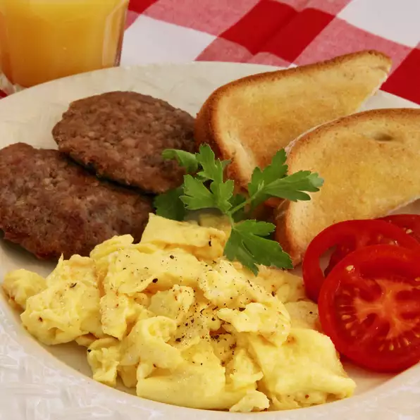

Ein schönes Rühreirezept!

Anleitung
- In einer Tasse oder einer kleinen Schüssel die Eier, die Mayonnaise und das Wasser mit einer Gabel verrühren.
- Die Margarine in einer Pfanne unter kleiner Hitze langsam schmelzen.
- Die Eiermasse unter konstantem Rühren hinzufügen.
- Das fertige Rührei (nicht zu trocken) auf einem Teller anrichten.
- Salz und Pfeffer nach eigenem Geschmack hinzufügen.
Zutaten
- 2 Eier
- 1 Teelöffel Mayonnaise oder Salatdressing
- 1 Teelöffel Wasser (optional)
- 1 Teelöffel Margarine oder Butter
- 1 Prise Salz und Pfeffer